HIGH · STANDARD


Reference identity
HSD_UIR_B01_TPL_GLOBAL_NAVIGATION_REF_STATE_OPEN_VP_320_MODE_STANDARD_STREAM_HIGH_V01
Frame 36:2494
Hengshi Design v1 · Phase1 static reference study
48 static previews now available. Thirty-seven earlier previews have their own bounded independent PASS. The eleven recovered views and their annotations now have separate bounded independent static PASS, with no material findings. This later gallery status update is outside the frozen review inputs. Cleanup remains held: the temporary Figma sheet inventory did not match the recorded preparation inventory. This gallery does not prove live behavior, accessibility conformance or wholeB01 acceptance.
HSD_UIR_B01_TPL_GLOBAL_NAVIGATION_REF_STATE_OPEN_VP_320_MODE_STANDARD_STREAM_HIGH_V01
Frame 36:2494
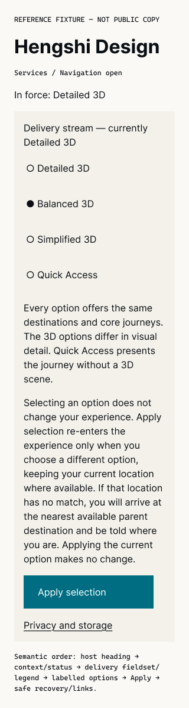
HSD_UIR_B01_TPL_GLOBAL_NAVIGATION_REF_STATE_OPEN_VP_320_MODE_SCREEN_READER_STREAM_HIGH_V01
Frame 36:2532
HSD_UIR_B01_TPL_GLOBAL_NAVIGATION_REF_STATE_OPEN_VP_320_MODE_REDUCED_MOTION_STREAM_HIGH_V01
Frame 36:2560

HSD_UIR_B01_TPL_GLOBAL_NAVIGATION_REF_STATE_OPEN_VP_320_MODE_STANDARD_STREAM_MEDIUM_V01
Frame 36:2587
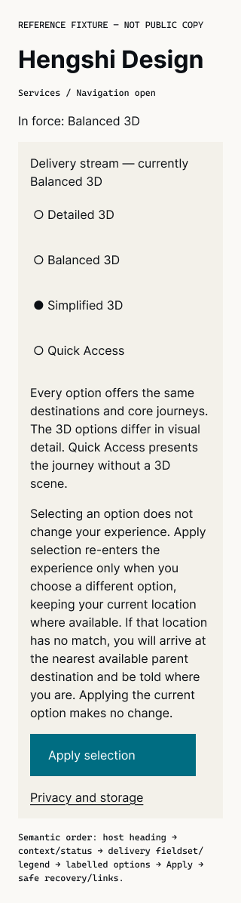
HSD_UIR_B01_TPL_GLOBAL_NAVIGATION_REF_STATE_OPEN_VP_320_MODE_SCREEN_READER_STREAM_MEDIUM_V01
Frame 36:2625
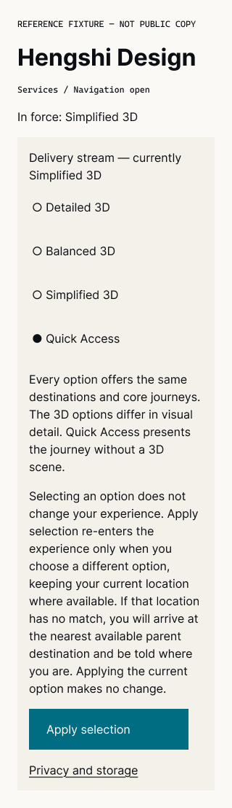
HSD_UIR_B01_TPL_GLOBAL_NAVIGATION_REF_STATE_OPEN_VP_320_MODE_LOW_POWER_STREAM_LOW_V01
Frame 36:2653
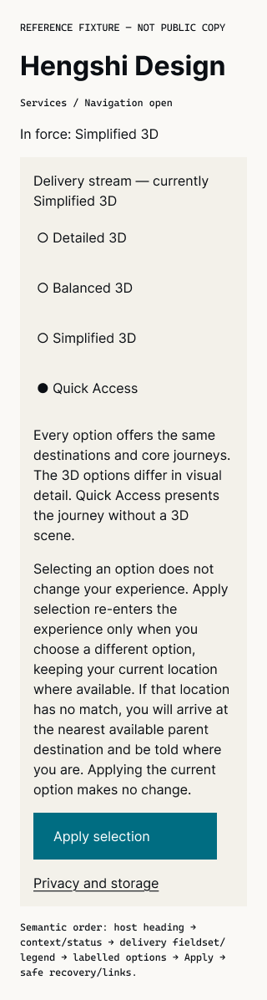
HSD_UIR_B01_TPL_GLOBAL_NAVIGATION_REF_STATE_OPEN_VP_320_MODE_SCREEN_READER_STREAM_LOW_V01
Frame 36:2680
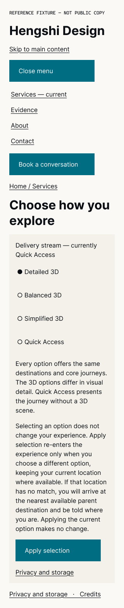
HSD_UIR_B01_TPL_GLOBAL_NAVIGATION_REF_STATE_OPEN_VP_320_MODE_STANDARD_STREAM_SEMANTIC_V01
Frame 36:2708
HSD_UIR_B01_TPL_GLOBAL_NAVIGATION_REF_STATE_OPEN_VP_320_MODE_SCREEN_READER_STREAM_SEMANTIC_V01
Frame 36:2746
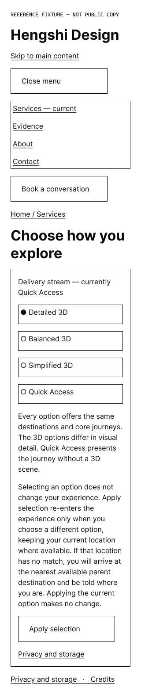
HSD_UIR_B01_TPL_GLOBAL_NAVIGATION_REF_STATE_OPEN_VP_320_MODE_FORCED_COLORS_STREAM_SEMANTIC_V01
Frame 36:2774
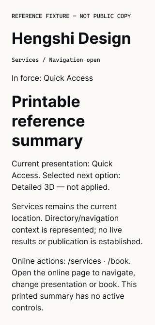
HSD_UIR_B01_TPL_GLOBAL_NAVIGATION_REF_STATE_OPEN_VP_320_MODE_PRINT_STREAM_SEMANTIC_V01
Frame 36:2812
HSD_UIR_B01_TPL_GLOBAL_NAVIGATION_REF_STATE_OPEN_VP_320_MODE_SEMANTIC_SHELL_STREAM_SEMANTIC_V01
Frame 36:2828
HSD_UIR_B01_TPL_GLOBAL_NAVIGATION_REF_STATE_OPEN_VP_320_MODE_GRAYSCALE_STREAM_SEMANTIC_V01
Frame 36:2855
HSD_UIR_B01_TPL_GLOBAL_NAVIGATION_REF_STATE_OPEN_VP_320_MODE_UNAVAILABLE_FONT_STREAM_SEMANTIC_V01
Frame 36:2882
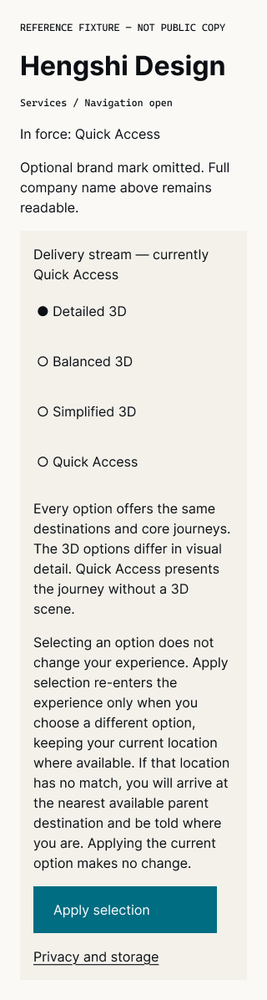
HSD_UIR_B01_TPL_GLOBAL_NAVIGATION_REF_STATE_OPEN_VP_320_MODE_UNAVAILABLE_IMAGE_ASSET_STREAM_SEMANTIC_V01
Frame 36:2909
HSD_UIR_B01_TPL_DIRECTORY_SEARCH_REF_STATE_OPEN_VP_320_MODE_STANDARD_STREAM_HIGH_V01
Frame 36:2937
HSD_UIR_B01_TPL_DIRECTORY_SEARCH_REF_STATE_OPEN_VP_320_MODE_SCREEN_READER_STREAM_HIGH_V01
Frame 36:2985
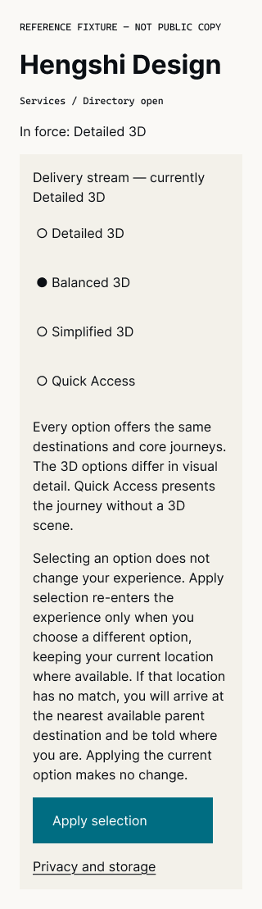
HSD_UIR_B01_TPL_DIRECTORY_SEARCH_REF_STATE_OPEN_VP_320_MODE_REDUCED_MOTION_STREAM_HIGH_V01
Frame 36:3013
HSD_UIR_B01_TPL_DIRECTORY_SEARCH_REF_STATE_OPEN_VP_320_MODE_STANDARD_STREAM_MEDIUM_V01
Frame 36:3040
HSD_UIR_B01_TPL_DIRECTORY_SEARCH_REF_STATE_OPEN_VP_320_MODE_SCREEN_READER_STREAM_MEDIUM_V01
Frame 36:3088
HSD_UIR_B01_TPL_DIRECTORY_SEARCH_REF_STATE_OPEN_VP_320_MODE_LOW_POWER_STREAM_LOW_V01
Frame 36:3116
HSD_UIR_B01_TPL_DIRECTORY_SEARCH_REF_STATE_OPEN_VP_320_MODE_SCREEN_READER_STREAM_LOW_V01
Frame 36:3143
HSD_UIR_B01_TPL_DIRECTORY_SEARCH_REF_STATE_OPEN_VP_320_MODE_STANDARD_STREAM_SEMANTIC_V01
Frame 36:3171
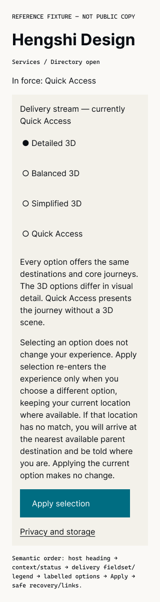
HSD_UIR_B01_TPL_DIRECTORY_SEARCH_REF_STATE_OPEN_VP_320_MODE_SCREEN_READER_STREAM_SEMANTIC_V01
Frame 36:3219
HSD_UIR_B01_TPL_DIRECTORY_SEARCH_REF_STATE_OPEN_VP_320_MODE_FORCED_COLORS_STREAM_SEMANTIC_V01
Frame 36:3247
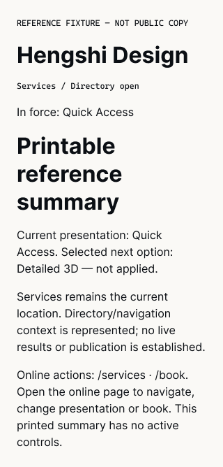
HSD_UIR_B01_TPL_DIRECTORY_SEARCH_REF_STATE_OPEN_VP_320_MODE_PRINT_STREAM_SEMANTIC_V01
Frame 36:3295
HSD_UIR_B01_TPL_DIRECTORY_SEARCH_REF_STATE_OPEN_VP_320_MODE_SEMANTIC_SHELL_STREAM_SEMANTIC_V01
Frame 36:3311
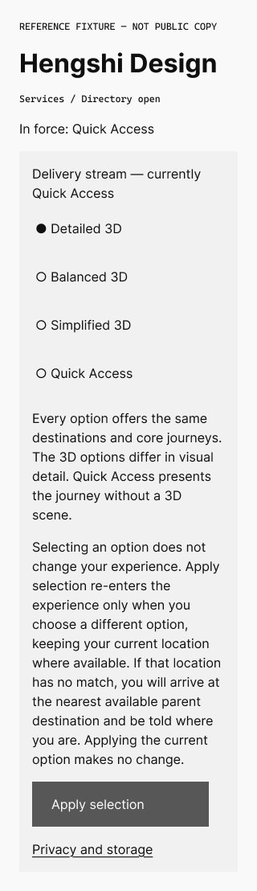
HSD_UIR_B01_TPL_DIRECTORY_SEARCH_REF_STATE_OPEN_VP_320_MODE_GRAYSCALE_STREAM_SEMANTIC_V01
Frame 36:3338
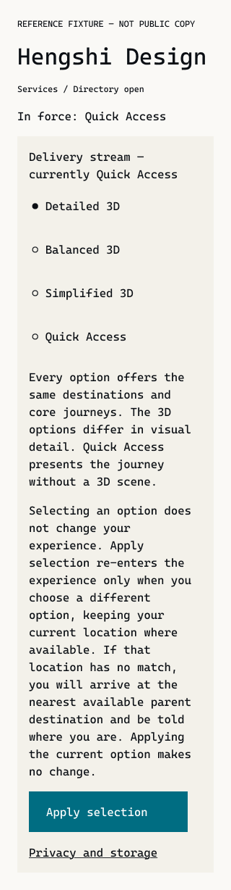
HSD_UIR_B01_TPL_DIRECTORY_SEARCH_REF_STATE_OPEN_VP_320_MODE_UNAVAILABLE_FONT_STREAM_SEMANTIC_V01
Frame 36:3365
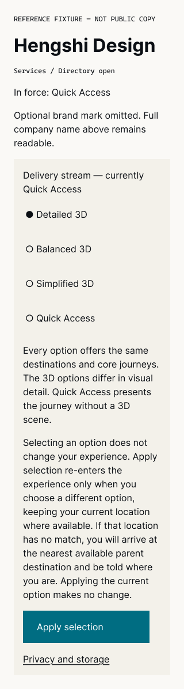
HSD_UIR_B01_TPL_DIRECTORY_SEARCH_REF_STATE_OPEN_VP_320_MODE_UNAVAILABLE_IMAGE_ASSET_STREAM_SEMANTIC_V01
Frame 36:3392
HSD_UIR_B01_TPL_SYSTEM_RECOVERY_REF_STATE_ERROR_VP_320_MODE_STANDARD_STREAM_HIGH_V01
Frame 36:3420
HSD_UIR_B01_TPL_SYSTEM_RECOVERY_REF_STATE_ERROR_VP_320_MODE_SCREEN_READER_STREAM_HIGH_V01
Frame 36:3452
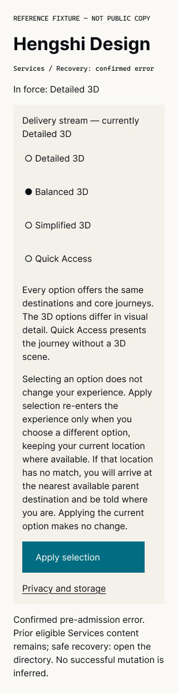
HSD_UIR_B01_TPL_SYSTEM_RECOVERY_REF_STATE_ERROR_VP_320_MODE_REDUCED_MOTION_STREAM_HIGH_V01
Frame 36:3481
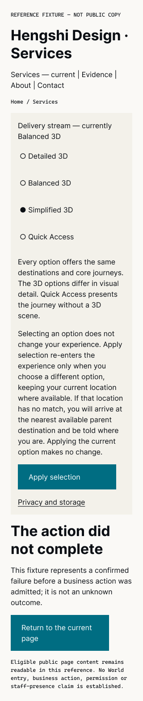
HSD_UIR_B01_TPL_SYSTEM_RECOVERY_REF_STATE_ERROR_VP_320_MODE_STANDARD_STREAM_MEDIUM_V01
Frame 36:3509
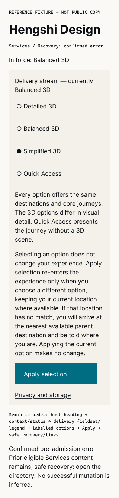
HSD_UIR_B01_TPL_SYSTEM_RECOVERY_REF_STATE_ERROR_VP_320_MODE_SCREEN_READER_STREAM_MEDIUM_V01
Frame 36:3541
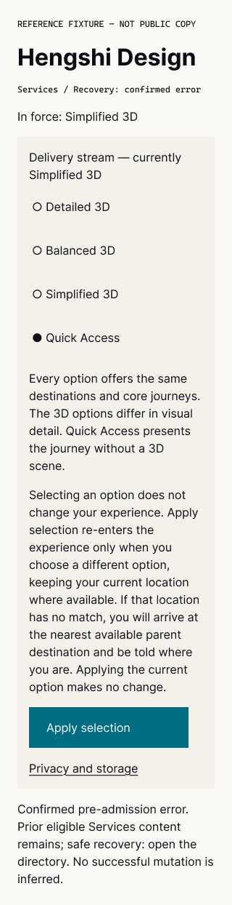
HSD_UIR_B01_TPL_SYSTEM_RECOVERY_REF_STATE_ERROR_VP_320_MODE_LOW_POWER_STREAM_LOW_V01
Frame 36:3570
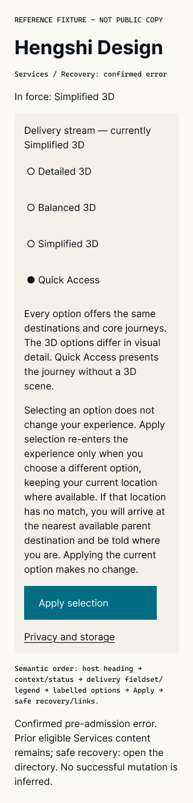
HSD_UIR_B01_TPL_SYSTEM_RECOVERY_REF_STATE_ERROR_VP_320_MODE_SCREEN_READER_STREAM_LOW_V01
Frame 36:3598
HSD_UIR_B01_TPL_SYSTEM_RECOVERY_REF_STATE_ERROR_VP_320_MODE_STANDARD_STREAM_SEMANTIC_V01
Frame 36:3627
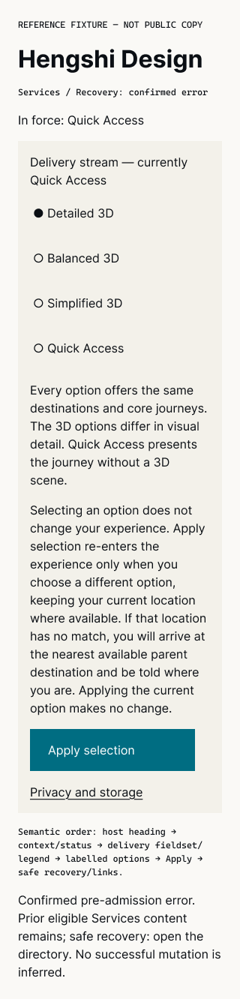
HSD_UIR_B01_TPL_SYSTEM_RECOVERY_REF_STATE_ERROR_VP_320_MODE_SCREEN_READER_STREAM_SEMANTIC_V01
Frame 36:3659
HSD_UIR_B01_TPL_SYSTEM_RECOVERY_REF_STATE_ERROR_VP_320_MODE_FORCED_COLORS_STREAM_SEMANTIC_V01
Frame 36:3688
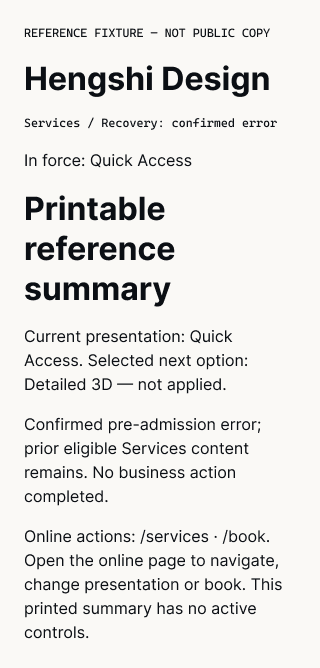
HSD_UIR_B01_TPL_SYSTEM_RECOVERY_REF_STATE_ERROR_VP_320_MODE_PRINT_STREAM_SEMANTIC_V01
Frame 36:3720
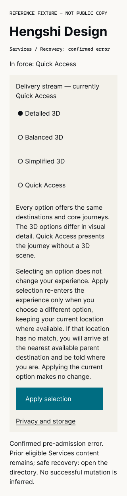
HSD_UIR_B01_TPL_SYSTEM_RECOVERY_REF_STATE_ERROR_VP_320_MODE_SEMANTIC_SHELL_STREAM_SEMANTIC_V01
Frame 36:3736
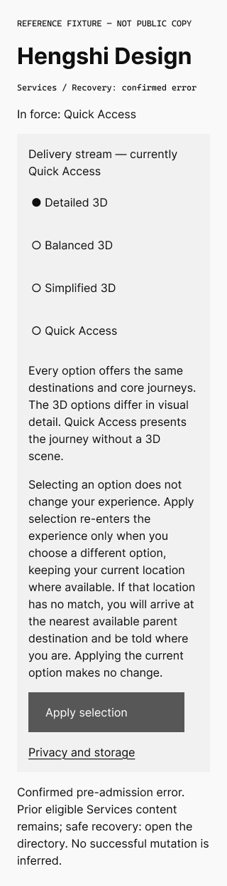
HSD_UIR_B01_TPL_SYSTEM_RECOVERY_REF_STATE_ERROR_VP_320_MODE_GRAYSCALE_STREAM_SEMANTIC_V01
Frame 36:3764
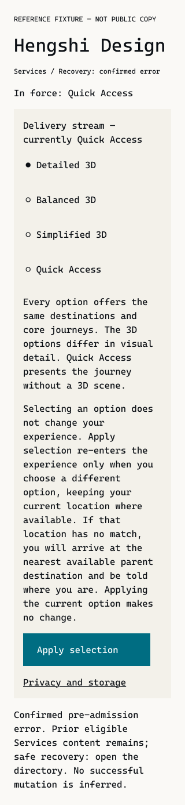
HSD_UIR_B01_TPL_SYSTEM_RECOVERY_REF_STATE_ERROR_VP_320_MODE_UNAVAILABLE_FONT_STREAM_SEMANTIC_V01
Frame 36:3792
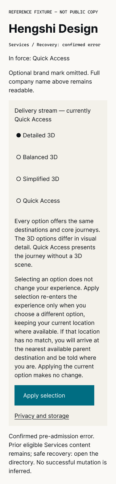
HSD_UIR_B01_TPL_SYSTEM_RECOVERY_REF_STATE_ERROR_VP_320_MODE_UNAVAILABLE_IMAGE_ASSET_STREAM_SEMANTIC_V01
Frame 36:3820
HSD_UIR_B01_TPL_SYSTEM_RECOVERY_REF_STATE_ERROR_VP_320_MODE_FORCED_COLORS_STREAM_HIGH_V01
Frame 36:3849
HSD_UIR_B01_TPL_SYSTEM_RECOVERY_REF_STATE_ERROR_VP_320_MODE_FORCED_COLORS_STREAM_MEDIUM_V01
Frame 36:3881
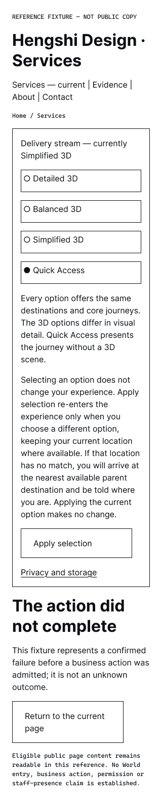
HSD_UIR_B01_TPL_SYSTEM_RECOVERY_REF_STATE_ERROR_VP_320_MODE_FORCED_COLORS_STREAM_LOW_V01
Frame 36:3913